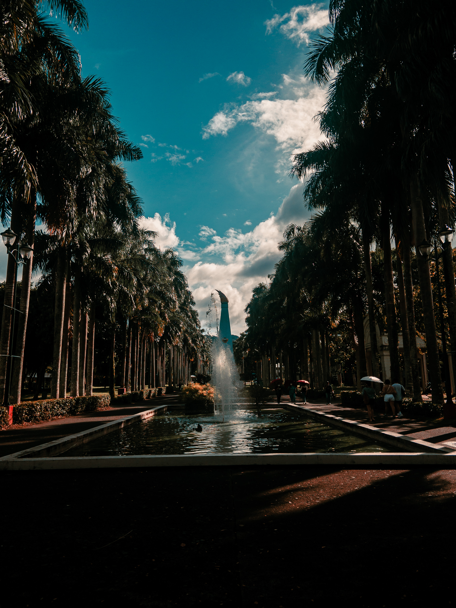
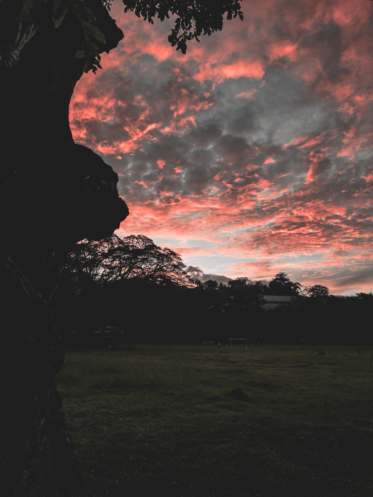
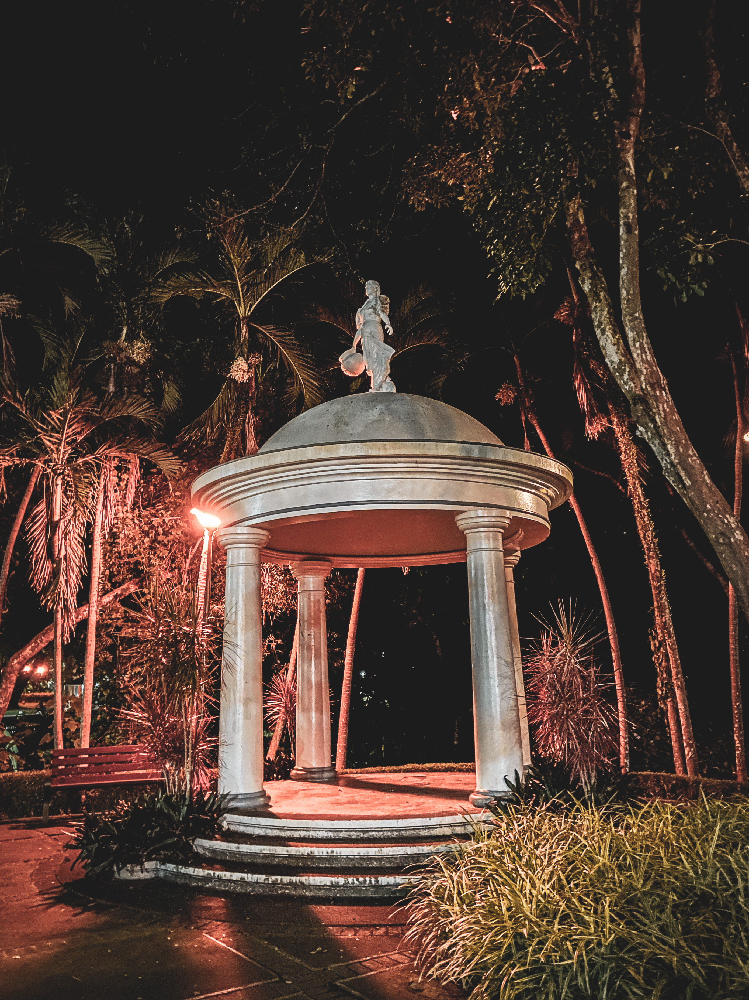

Arts 1 Blog
This is where I will be putting my blog entries for my ARTS 1 Section H class.
Blog Entry 1
My partner, Luis Pontillas, and I both shared our insights on the question of how one contributes to the ongoing discourse of the patriarchal and Western definitions of art in the Philippine context. I shared that there is so much that we, especially as scholars of this institution, can do to further this discourse. First, there is a need to fully acknowledge that art has favored the patriarchy for the longest time. I believe we can shift this spotlight to Filipino women who very much deserve recognition. Taking Richard Gomez’ painting depicting a yellow phallus, we can take time to think if it would have received the same attention if it was painted by a non-celebrity. Was the attention well deserved? I do not believe so.
A good example of a Filipino artist whom I consider artistic beyond Western and patriarchal definitions is Apo Whang-od, the last “Mambabatok” or Kalinga tattoo artist. For the majority of her life, she had been (and still is) a tattooist. I consider her art as that of beyond Western/patriarchal definitions as the style of her tattoos originate from her tribe alone. Albeit the technique of tattooing is not unique to their tribe, it is apparent that there is no Western influence as their tattoos very much differ from Apo Whang-od’s. Going back to Richard Gomez’ painting, does it not make sense to take away the given attention and appreciation from the man’s “art” and give such to Apo Whang-od’s instead? Looking beyond the colors of her tattoos, I believe her art clearly shows how rich the Philippine culture really is. This is the kind of art that deserves to be preserved; not necessarily by continuing the tribe’s tattoo culture as there is a fine line between appropriation and appreciation. I would just like for all future generations of the Filipino to know, acknowledge, and pay respect to an incredible art that is Filipino at its very core, neither defined by the West nor the patriarchy.
Image taken from:
https://www.sagisag.com/article/946/news/check-out-apo-whang-ods-streetwear-line
Blog Entry 2: One's Arts
Up until now, I was not really into this specific kind of visual art. It was only when I arrived in UP Los Baños at the start of the semester did I gain great interest in photography. I would walk around campus at any time of the day be it at morning’s dawn, in the heat of the afternoon, or even late at night just moments before curfew. I love taking photos of sceneries or close-up shots of animals with my smartphone, post-processing them in Adobe LightRoom, and lastly sharing them on my social media accounts for my friends to see. The themes of my pictures depend heavily on the day I am having. For example, if the day is rainy or gloomy, I choose to make my shots lean towards a cooler temperature. If the day is sunny or warm, I would adjust my shots accordingly to fit my good mood.
The following are some of my shots:




A good example of a Filipino artist whom I consider artistic beyond Western and patriarchal definitions is Apo Whang-od, the last “Mambabatok” or Kalinga tattoo artist. For the majority of her life, she had been (and still is) a tattooist. I consider her art as that of beyond Western/patriarchal definitions as the style of her tattoos originate from her tribe alone. Albeit the technique of tattooing is not unique to their tribe, it is apparent that there is no Western influence as their tattoos very much differ from Apo Whang-od’s. Going back to Richard Gomez’ painting, does it not make sense to take away the given attention and appreciation from the man’s “art” and give such to Apo Whang-od’s instead? Looking beyond the colors of her tattoos, I believe her art clearly shows how rich the Philippine culture really is. This is the kind of art that deserves to be preserved; not necessarily by continuing the tribe’s tattoo culture as there is a fine line between appropriation and appreciation. I would just like for all future generations of the Filipino to know, acknowledge, and pay respect to an incredible art that is Filipino at its very core, neither defined by the West nor the patriarchy.